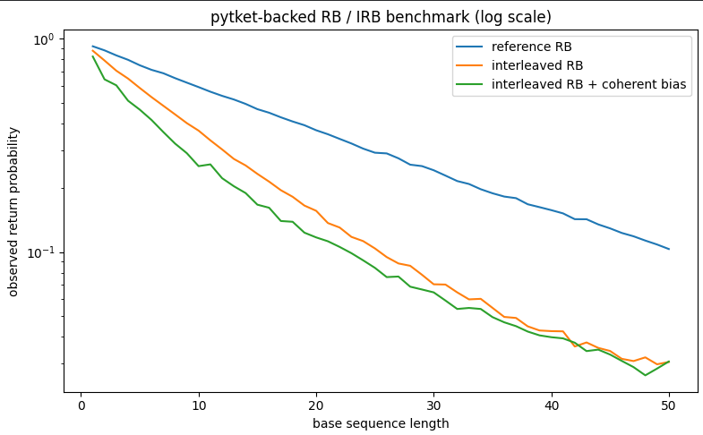
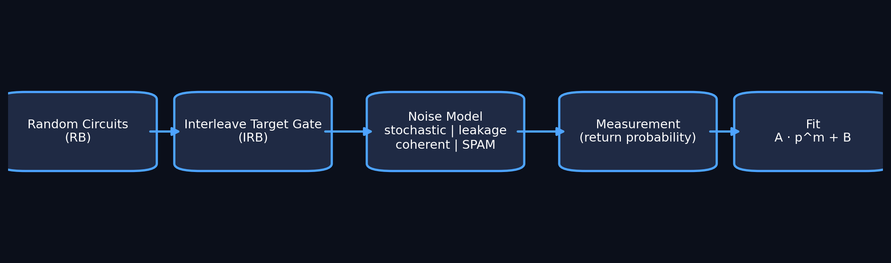

ion-benchmark-lab
Minimal randomized benchmarking (RB) and interleaved randomized benchmarking (IRB) with leakage, SPAM, and coherent error — implemented with pytket and fully reproducible.
Overview
This project implements a minimal benchmarking pipeline progressing from baseline RB to interleaved RB, SPAM-aware fitting, and coherent target-gate error modeling.
The goal is clarity: a compact, inspectable system that demonstrates both the strengths and limitations of standard randomized benchmarking assumptions.
Main Result

Reference RB vs interleaved RB vs interleaved RB with coherent error.
Interleaving increases decay, and coherent error further distorts the signal.
Pipeline

Files
notebooks/01_leakage_benchmark_v0_9.ipynbnotebooks/history/paper/main.tex